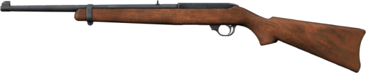
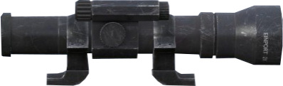
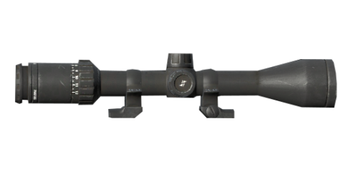
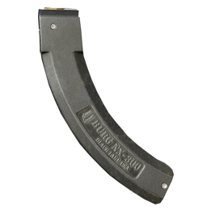
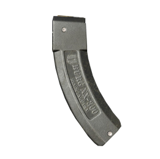

📋 Основная информация
| Вес | 2 кг |
| Размер | 3x8 |
| Прочность | 200 Hp |
| ID предмета | Ruger1022 |
| Время жизни на земле | 480 мин |
🎯 Характеристики
| Урон | -20 / 100 |
| Вместимость внут.магазина | 1 пат |
| Долговечность | 700 выстрелов |
| Раскачивание | 170 |
| Вертикальная отдача | 13 |
| Горизонтальная отдача | 11 |
| Режим стрельбы | Полуавт |
| Слышимость | 1000 м |
| Скорость полета пули | 425.5 м\с |
| Скорострельность | 451.12 в\м |
💰 Экономика
| Локация | Сколько | Тир | Где можно найти |
|---|---|---|---|
| Чернарусь | 35 шт | 1 | Городские строения Деревенские строения |

🎯 Прицелы

Спортивный прицел
Охотничий прицел с 2-кратным увеличением. Прицельная сетка с подсветкой на батарейках обеспечивает простую и..
Вес: 0.5 кг
· Размер: 1х3

Оптический прицел (Охотничий)
Крепящийся охотничий прицел с переменным 4-,8- и 12-кратным увеличением. Простой, надежный и точный...
Вес: 1 кг
· Размер: 1x4

🧩 Дополнительные модули

📦 Магазины

Магазин для Sporter 22 на 30 пат.
Съемный коробчатый магазин для винтовки Sporter 22. Вмещает до 30 патронов калибра 22 Long Rifle...
Вес: 0.250 кг
· Размер: 1x3

Магазин для Sporter 22 на 15 пат.
Съемный коробчатый магазин для винтовки Sporter 22. Вмещает до 15 патронов калибра 22 Long Rifle...
Вес: 0.250 кг
· Размер: 1x2